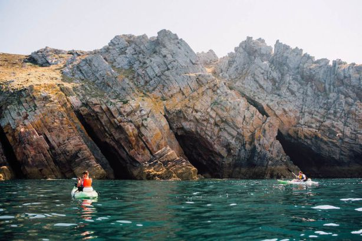
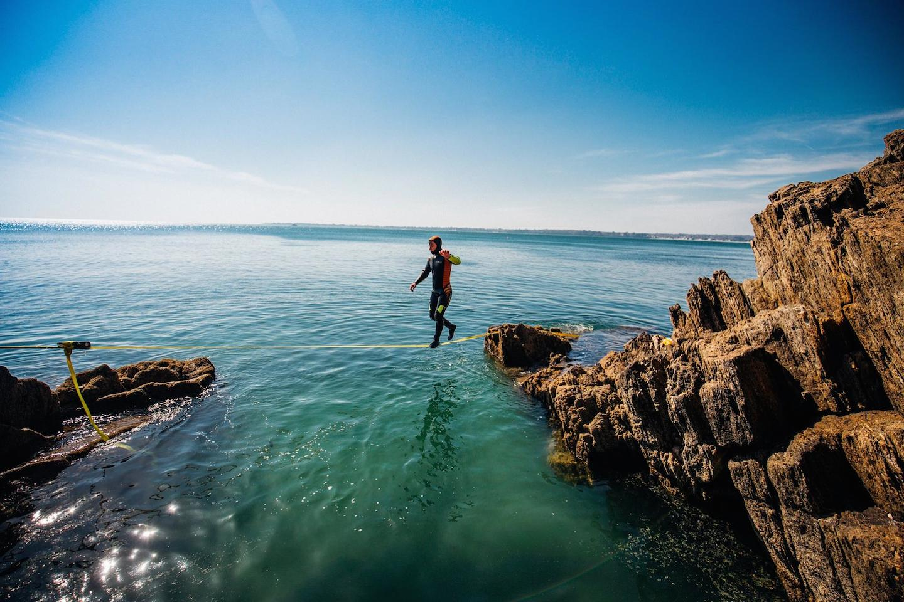

Hugo Le Bihan
Co-Founder @ Port d'Attache
The magazine that gives you another idea of Brittany
See for yourselfMy Favorite articles
.jpg)
Huelgoat ForestIf you want to inspire a good shot, this forest is here to satisfy your curiosity. While exploring this corner of finistérien greenery, you will walk in the footsteps of the ancestral knights of the Round Table. Better yet, you will admire the granite chaos that is the fame of this wood. How to visit the forest of Huelgoat? Follow our advice and she will have no secrets for you. |
|
 Camaret sur merTo venture on the Breton coast reserves many surprises when we discover its essential places. In Finistère (29), there is a classic called 'end of the world' literally and figuratively. We could have made you discover the coast from the coastal paths, it was not counting on the call of the adventure and our point of originality. Embark directly to understand how to explore Camaret-sur-Mer otherwise. |
|
 Slackline by the seaAn ideal discipline for sunny days, making the Slackline in a creek is a perfect program for Brittany! Indeed, the photographer Concarnois (29) Thomas Stefanczyk reveals behind the scenes of such activity. |